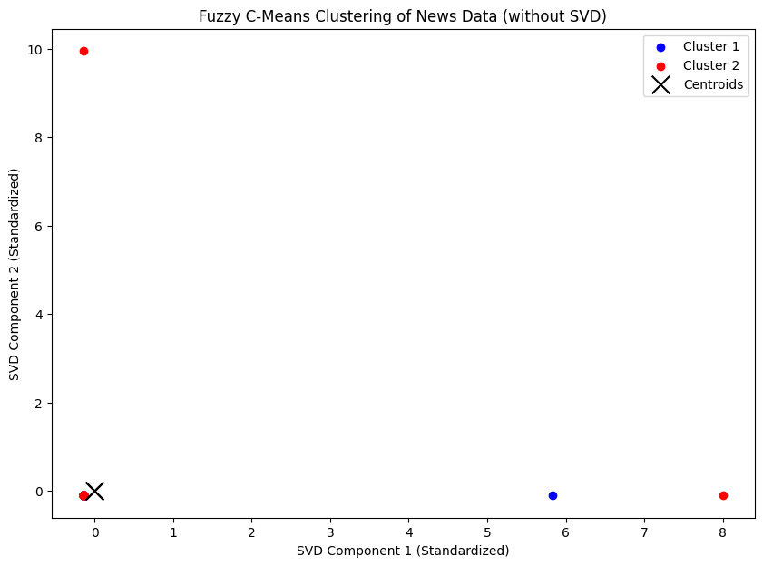
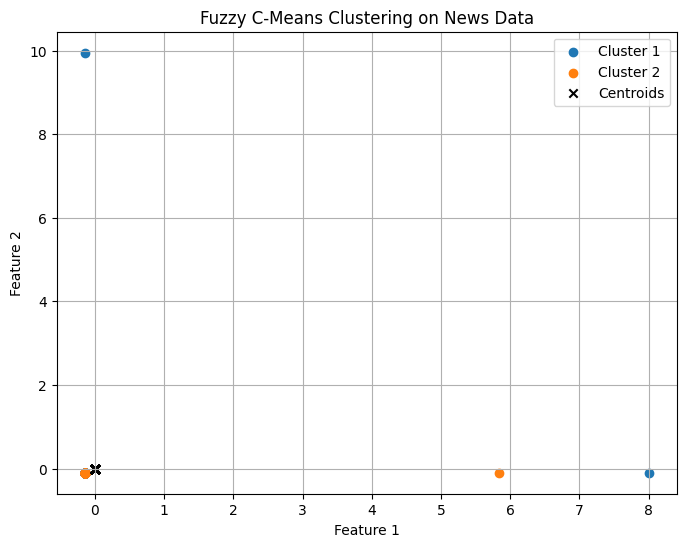
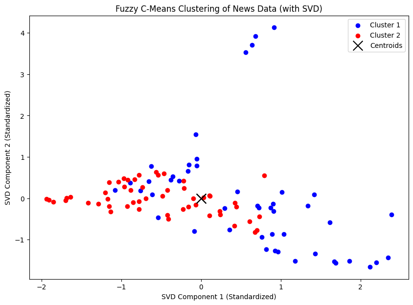
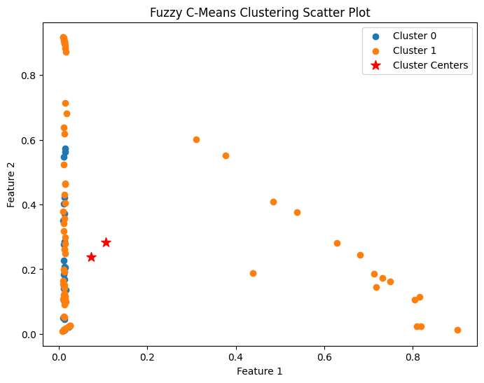

Nama : Achmad Baharuddin Akbar
NIM : 210411100001
Test fuzzy c-means 1#
from google.colab import drive
drive.mount('/content/drive')
Drive already mounted at /content/drive; to attempt to forcibly remount, call drive.mount("/content/drive", force_remount=True).
import pandas as pd
df = pd.read_csv("/content/drive/My Drive/PPW-A/report/tugas-ppw/hasil_preprocesing.csv")
df.head()
| judul | tanggal | isi | kategori | cleansing | case_folding | tokenize | Filtering/stopword removal | |
|---|---|---|---|---|---|---|---|---|
| 0 | Soroti Kekurangan Nakes, Prabowo Minta India K... | Kamis, 21 Nov 2024 09:31 WIB | Jakarta - Presiden Republik Indonesia Prabowo ... | Kesehatan | Jakarta Presiden Republik Indonesia Prabowo S... | jakarta presiden republik indonesia prabowo s... | ['jakarta', 'presiden', 'republik', 'indonesia... | jakarta presiden republik indonesia prabowo su... |
| 1 | Mayapada Hospital Bisa Tangani Bengkak Pasca T... | Kamis, 21 Nov 2024 09:06 WIB | Jakarta - Mayapada Hospital menawarkan solusi ... | Kesehatan | Jakarta Mayapada Hospital menawarkan solusi p... | jakarta mayapada hospital menawarkan solusi p... | ['jakarta', 'mayapada', 'hospital', 'menawarka... | jakarta mayapada hospital menawarkan solusi pe... |
| 2 | Jangan Sampai Keliru, Ini Beda Nyeri Punggung ... | Kamis, 21 Nov 2024 09:01 WIB | Jakarta - Saraf kejepit menjadi suatu masalah ... | Kesehatan | Jakarta Saraf kejepit menjadi suatu masalah y... | jakarta saraf kejepit menjadi suatu masalah y... | ['jakarta', 'saraf', 'kejepit', 'menjadi', 'su... | jakarta saraf kejepit diabaikan berdampak seri... |
| 3 | Heboh Pejabat di Swedia Punya Fobia Aneh, Taku... | Kamis, 21 Nov 2024 08:31 WIB | Jakarta - Seorang menteri Swedia yang punya ke... | Kesehatan | Jakarta Seorang menteri Swedia yang punya ket... | jakarta seorang menteri swedia yang punya ket... | ['jakarta', 'seorang', 'menteri', 'swedia', 'y... | jakarta menteri swedia ketakutan pisang bahan ... |
| 4 | Mayapada Hospital Punya Teknologi VABB untuk B... | Kamis, 21 Nov 2024 08:14 WIB | Jakarta - Mayapada Hospital menawarkan teknolo... | Kesehatan | Jakarta Mayapada Hospital menawarkan teknolog... | jakarta mayapada hospital menawarkan teknolog... | ['jakarta', 'mayapada', 'hospital', 'menawarka... | jakarta mayapada hospital menawarkan teknologi... |
!pip install scikit-fuzzy
# Import libraries yang diperlukan
import pandas as pd
import numpy as np
import matplotlib.pyplot as plt
import skfuzzy as fuzz
from sklearn.feature_extraction.text import TfidfVectorizer
from sklearn.preprocessing import StandardScaler
Requirement already satisfied: scikit-fuzzy in /usr/local/lib/python3.10/dist-packages (0.5.0)
texts = df['Filtering/stopword removal']
# Preprocessing: TF-IDF
tfidf = TfidfVectorizer()
tfidf_matrix = tfidf.fit_transform(texts)
tfidf_array = tfidf_matrix.toarray()
# Normalisasi fitur
scaler = StandardScaler()
X_scaled = scaler.fit_transform(tfidf_array)
n_clusters = 2 # Jumlah cluster yang diinginkan
cntr, u, _, _, _, _, _ = fuzz.cluster.cmeans(
X_scaled.T, c=n_clusters, m=2, error=0.001, maxiter=1000, init=None
)
# Menentukan cluster untuk setiap data berdasarkan keanggotaan tertinggi
cluster_labels = np.argmax(u, axis=0)
# Visualisasi hasil klasterisasi
plt.figure(figsize=(10, 7))
colors = ['b', 'r']
for i in range(n_clusters):
plt.scatter(X_scaled[cluster_labels == i, 0], X_scaled[cluster_labels == i, 1],
color=colors[i], label=f'Cluster {i+1}')
# Menampilkan pusat cluster
plt.scatter(cntr[:, 0], cntr[:, 1], marker='x', s=200, color='k', label='Centroids')
plt.xlabel('SVD Component 1 (Standardized)')
plt.ylabel('SVD Component 2 (Standardized)')
plt.title('Fuzzy C-Means Clustering of News Data (without SVD)')
plt.legend()
plt.show()

# Tentukan jumlah cluster dan parameter fuzziness
n_clusters = 2
m = 2 # Parameter fuzziness
# Terapkan Fuzzy C-Means
cntr, u, u0, d, jm, p, fpc = fuzz.cluster.cmeans(
X_scaled.T, n_clusters, m, error=0.001, maxiter=1000, init=None
)
# Tentukan keanggotaan cluster
cluster_membership = np.argmax(u, axis=0)
# Visualisasi Hasil Clustering
plt.figure(figsize=(8, 6))
for i in range(n_clusters):
plt.scatter(X_scaled[cluster_membership == i, 0], X_scaled[cluster_membership == i, 1], label=f'Cluster {i+1}')
# Tampilkan centroid
plt.scatter(cntr[0], cntr[1], marker='x', color='black', label='Centroids')
plt.title('Fuzzy C-Means Clustering on News Data')
plt.xlabel('Feature 1')
plt.ylabel('Feature 2')
plt.legend()
plt.grid(True)
plt.show()
# Evaluasi Hasil
print("Fuzzy Partition Coefficient (FPC):", fpc)

Fuzzy Partition Coefficient (FPC): 0.5000000000014999
Test fuzzy c-means 2#
from google.colab import drive
drive.mount('/content/drive')
Drive already mounted at /content/drive; to attempt to forcibly remount, call drive.mount("/content/drive", force_remount=True).
import pandas as pd
df = pd.read_csv("/content/drive/My Drive/PPW-A/report/tugas-ppw/hasil_preprocesing.csv")
df.head()
| judul | tanggal | isi | kategori | cleansing | case_folding | tokenize | Filtering/stopword removal | |
|---|---|---|---|---|---|---|---|---|
| 0 | Soroti Kekurangan Nakes, Prabowo Minta India K... | Kamis, 21 Nov 2024 09:31 WIB | Jakarta - Presiden Republik Indonesia Prabowo ... | Kesehatan | Jakarta Presiden Republik Indonesia Prabowo S... | jakarta presiden republik indonesia prabowo s... | ['jakarta', 'presiden', 'republik', 'indonesia... | jakarta presiden republik indonesia prabowo su... |
| 1 | Mayapada Hospital Bisa Tangani Bengkak Pasca T... | Kamis, 21 Nov 2024 09:06 WIB | Jakarta - Mayapada Hospital menawarkan solusi ... | Kesehatan | Jakarta Mayapada Hospital menawarkan solusi p... | jakarta mayapada hospital menawarkan solusi p... | ['jakarta', 'mayapada', 'hospital', 'menawarka... | jakarta mayapada hospital menawarkan solusi pe... |
| 2 | Jangan Sampai Keliru, Ini Beda Nyeri Punggung ... | Kamis, 21 Nov 2024 09:01 WIB | Jakarta - Saraf kejepit menjadi suatu masalah ... | Kesehatan | Jakarta Saraf kejepit menjadi suatu masalah y... | jakarta saraf kejepit menjadi suatu masalah y... | ['jakarta', 'saraf', 'kejepit', 'menjadi', 'su... | jakarta saraf kejepit diabaikan berdampak seri... |
| 3 | Heboh Pejabat di Swedia Punya Fobia Aneh, Taku... | Kamis, 21 Nov 2024 08:31 WIB | Jakarta - Seorang menteri Swedia yang punya ke... | Kesehatan | Jakarta Seorang menteri Swedia yang punya ket... | jakarta seorang menteri swedia yang punya ket... | ['jakarta', 'seorang', 'menteri', 'swedia', 'y... | jakarta menteri swedia ketakutan pisang bahan ... |
| 4 | Mayapada Hospital Punya Teknologi VABB untuk B... | Kamis, 21 Nov 2024 08:14 WIB | Jakarta - Mayapada Hospital menawarkan teknolo... | Kesehatan | Jakarta Mayapada Hospital menawarkan teknolog... | jakarta mayapada hospital menawarkan teknolog... | ['jakarta', 'mayapada', 'hospital', 'menawarka... | jakarta mayapada hospital menawarkan teknologi... |
!pip install scikit-fuzzy
# Import libraries yang diperlukan
import numpy as np
import pandas as pd
import skfuzzy as fuzz
import matplotlib.pyplot as plt
from sklearn.feature_extraction.text import TfidfVectorizer
from sklearn.decomposition import TruncatedSVD
from sklearn.preprocessing import StandardScaler
Requirement already satisfied: scikit-fuzzy in /usr/local/lib/python3.10/dist-packages (0.5.0)
texts = df['Filtering/stopword removal']
# Preprocessing: TF-IDF
tfidf = TfidfVectorizer()
tfidf_matrix = tfidf.fit_transform(texts)
tfidf_array = tfidf_matrix.toarray()
# Reduksi dimensi menggunakan SVD
svd = TruncatedSVD(n_components=20, random_state=42)
data_2d = svd.fit_transform(tfidf_array)
# Normalisasi dengan StandardScaler
scaler = StandardScaler()
data_2d_normalized = scaler.fit_transform(data_2d)
# Tetapkan random seed u
np.random.seed(42)
# Fuzzy C-Means Clustering
n_clusters = 2
cntr, u, _, _, _, _, _ = fuzz.cluster.cmeans(
data_2d_normalized.T, c=n_clusters, m=2, error=0.001, maxiter=500, init=None
)
# Menentukan cluster untuk setiap data berdasarkan keanggotaan tertinggi
cluster_labels = np.argmax(u, axis=0)
# Menambahkan hasil klasterisasi ke dalam DataFrame
df['Cluster'] = cluster_labels
# Menampilkan jumlah data pada setiap cluster
cluster_counts = df['Cluster'].value_counts()
print("Jumlah data pada setiap cluster:")
print(cluster_counts)
df_filtered = df[['judul', 'tanggal', 'isi', 'kategori', 'Cluster']]
df_filtered
Jumlah data pada setiap cluster:
Cluster
1 53
0 47
Name: count, dtype: int64
| judul | tanggal | isi | kategori | Cluster | |
|---|---|---|---|---|---|
| 0 | Soroti Kekurangan Nakes, Prabowo Minta India K... | Kamis, 21 Nov 2024 09:31 WIB | Jakarta - Presiden Republik Indonesia Prabowo ... | Kesehatan | 1 |
| 1 | Mayapada Hospital Bisa Tangani Bengkak Pasca T... | Kamis, 21 Nov 2024 09:06 WIB | Jakarta - Mayapada Hospital menawarkan solusi ... | Kesehatan | 0 |
| 2 | Jangan Sampai Keliru, Ini Beda Nyeri Punggung ... | Kamis, 21 Nov 2024 09:01 WIB | Jakarta - Saraf kejepit menjadi suatu masalah ... | Kesehatan | 0 |
| 3 | Heboh Pejabat di Swedia Punya Fobia Aneh, Taku... | Kamis, 21 Nov 2024 08:31 WIB | Jakarta - Seorang menteri Swedia yang punya ke... | Kesehatan | 1 |
| 4 | Mayapada Hospital Punya Teknologi VABB untuk B... | Kamis, 21 Nov 2024 08:14 WIB | Jakarta - Mayapada Hospital menawarkan teknolo... | Kesehatan | 0 |
| ... | ... | ... | ... | ... | ... |
| 95 | Jijik! Supermarket Ini Penuh Bangkai Tikus dan... | Selasa, 19 Nov 2024 17:00 WIB | Jakarta - Supermarket seharusnya bersih. Tetap... | Kuliner | 1 |
| 96 | Mike Tyson Tetap Bugar di Usia 58 Tahun, Ini M... | Selasa, 19 Nov 2024 16:30 WIB | Jakarta - Mike Tyson kembali menyorot perhatia... | Kuliner | 1 |
| 97 | 5 Pengunjung Resto Ini Kena Denda Puluhan Juta... | Selasa, 19 Nov 2024 16:00 WIB | Jakarta - Karena dipicu berbagai alasan dan se... | Kuliner | 0 |
| 98 | Canggih! Kini Susu Basi Bisa Dideteksi via Pon... | Selasa, 19 Nov 2024 15:00 WIB | Jakarta - Kecanggihan teknologi kini membuat d... | Kuliner | 1 |
| 99 | Kocak! Bule Ini Sebut Pecel Lele Sebagai Kadal... | Selasa, 19 Nov 2024 14:30 WIB | Jakarta - Pesan steak ayam via aplikasi ojek o... | Kuliner | 0 |
100 rows × 5 columns
# Visualisasi hasil klasterisasi
plt.figure(figsize=(10, 7))
colors = ['b', 'r']
for i in range(n_clusters):
plt.scatter(data_2d_normalized[cluster_labels == i, 0], data_2d_normalized[cluster_labels == i, 1],
color=colors[i], label=f'Cluster {i+1}')
# Menampilkan pusat cluster
plt.scatter(cntr[:, 0], cntr[:, 1], marker='x', s=200, color='k', label='Centroids')
plt.xlabel('SVD Component 1 (Standardized)')
plt.ylabel('SVD Component 2 (Standardized)')
plt.title('Fuzzy C-Means Clustering of News Data (with SVD)')
plt.legend()
plt.show()

Test fuzzy c-means 3#
from google.colab import drive
drive.mount('/content/drive')
Drive already mounted at /content/drive; to attempt to forcibly remount, call drive.mount("/content/drive", force_remount=True).
import pandas as pd
df = pd.read_csv("/content/drive/My Drive/PPW-A/report/tugas-ppw/hasil_preprocesing.csv")
df.head()
| judul | tanggal | isi | kategori | cleansing | case_folding | tokenize | Filtering/stopword removal | |
|---|---|---|---|---|---|---|---|---|
| 0 | Soroti Kekurangan Nakes, Prabowo Minta India K... | Kamis, 21 Nov 2024 09:31 WIB | Jakarta - Presiden Republik Indonesia Prabowo ... | Kesehatan | Jakarta Presiden Republik Indonesia Prabowo S... | jakarta presiden republik indonesia prabowo s... | ['jakarta', 'presiden', 'republik', 'indonesia... | jakarta presiden republik indonesia prabowo su... |
| 1 | Mayapada Hospital Bisa Tangani Bengkak Pasca T... | Kamis, 21 Nov 2024 09:06 WIB | Jakarta - Mayapada Hospital menawarkan solusi ... | Kesehatan | Jakarta Mayapada Hospital menawarkan solusi p... | jakarta mayapada hospital menawarkan solusi p... | ['jakarta', 'mayapada', 'hospital', 'menawarka... | jakarta mayapada hospital menawarkan solusi pe... |
| 2 | Jangan Sampai Keliru, Ini Beda Nyeri Punggung ... | Kamis, 21 Nov 2024 09:01 WIB | Jakarta - Saraf kejepit menjadi suatu masalah ... | Kesehatan | Jakarta Saraf kejepit menjadi suatu masalah y... | jakarta saraf kejepit menjadi suatu masalah y... | ['jakarta', 'saraf', 'kejepit', 'menjadi', 'su... | jakarta saraf kejepit diabaikan berdampak seri... |
| 3 | Heboh Pejabat di Swedia Punya Fobia Aneh, Taku... | Kamis, 21 Nov 2024 08:31 WIB | Jakarta - Seorang menteri Swedia yang punya ke... | Kesehatan | Jakarta Seorang menteri Swedia yang punya ket... | jakarta seorang menteri swedia yang punya ket... | ['jakarta', 'seorang', 'menteri', 'swedia', 'y... | jakarta menteri swedia ketakutan pisang bahan ... |
| 4 | Mayapada Hospital Punya Teknologi VABB untuk B... | Kamis, 21 Nov 2024 08:14 WIB | Jakarta - Mayapada Hospital menawarkan teknolo... | Kesehatan | Jakarta Mayapada Hospital menawarkan teknolog... | jakarta mayapada hospital menawarkan teknolog... | ['jakarta', 'mayapada', 'hospital', 'menawarka... | jakarta mayapada hospital menawarkan teknologi... |
!pip install scikit-fuzzy
import numpy as np
import pandas as pd
import matplotlib.pyplot as plt
from sklearn.decomposition import LatentDirichletAllocation
from sklearn.feature_extraction.text import TfidfVectorizer
import skfuzzy as fuzz
Requirement already satisfied: scikit-fuzzy in /usr/local/lib/python3.10/dist-packages (0.5.0)
# Lakukan preprocessing data menggunakan TF-IDF
tfidf = TfidfVectorizer()
X = tfidf.fit_transform(df['Filtering/stopword removal']).toarray()
lda = LatentDirichletAllocation(n_components=9)
X_topic = lda.fit_transform(X)
# Implementasikan Fuzzy C-Means menggunakan Fuzzy library
n_clusters = 2
m = 8 # Fuzzy coefficient
max_iter = 1000
tol = 0.05
cntr, u, _, _, _, _, _ = fuzz.cluster.cmeans(X_topic.T, n_clusters, m, max_iter, tol)
# Dapatkan label cluster untuk setiap data
labels = np.argmax(u, axis=0)
import matplotlib.pyplot as plt
import seaborn as sns
import numpy as np
# Buat plot scatter
plt.figure(figsize=(8, 6))
for i in range(n_clusters):
cluster_data = X_topic[labels == i]
plt.scatter(cluster_data[:, 0], cluster_data[:, 1], label=f'Cluster {i}')
plt.scatter(cntr[:, 0], cntr[:, 1], s=100, c='red', marker='*', label='Cluster Centers')
plt.title('Fuzzy C-Means Clustering Scatter Plot')
plt.xlabel('Feature 1')
plt.ylabel('Feature 2')
plt.legend()
plt.show()
